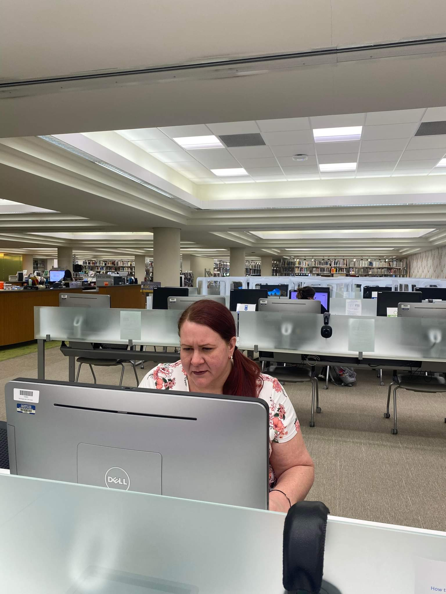
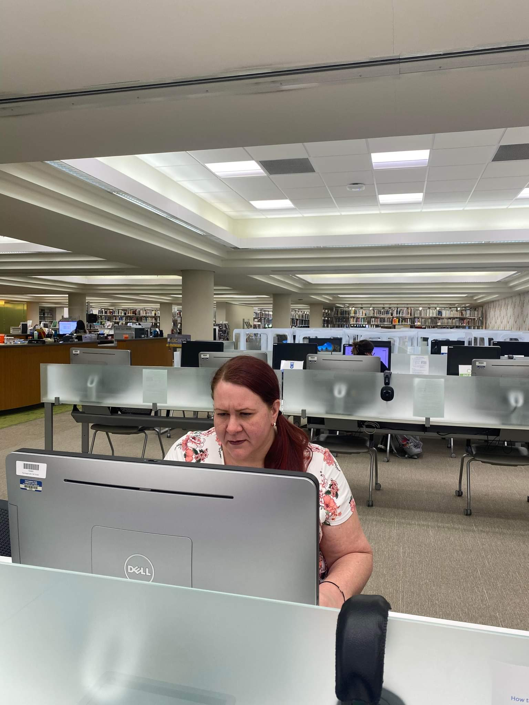

Taking a Closer Look
Mrs.Rogers is currently still attending Chattanooga State Community College seeking an A.A.S Journalism and Media Design an Production. She has aired on WAWL Radio as an on air radio personality and anchored onset at the Chattanooga State television production studio.
 
